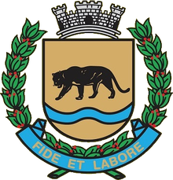

SP · 3524709 · Departamento de Agropecuária e Meio Ambiente
Departamento de Agropecuária e Meio Ambiente
O Programa Bacias Jaguariúna atua na proteção e recuperação dos recursos hídricos do município por meio de três frentes de trabalho: